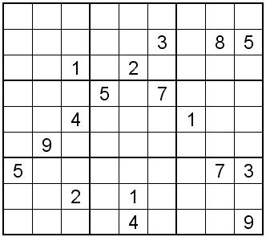
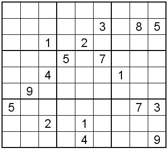
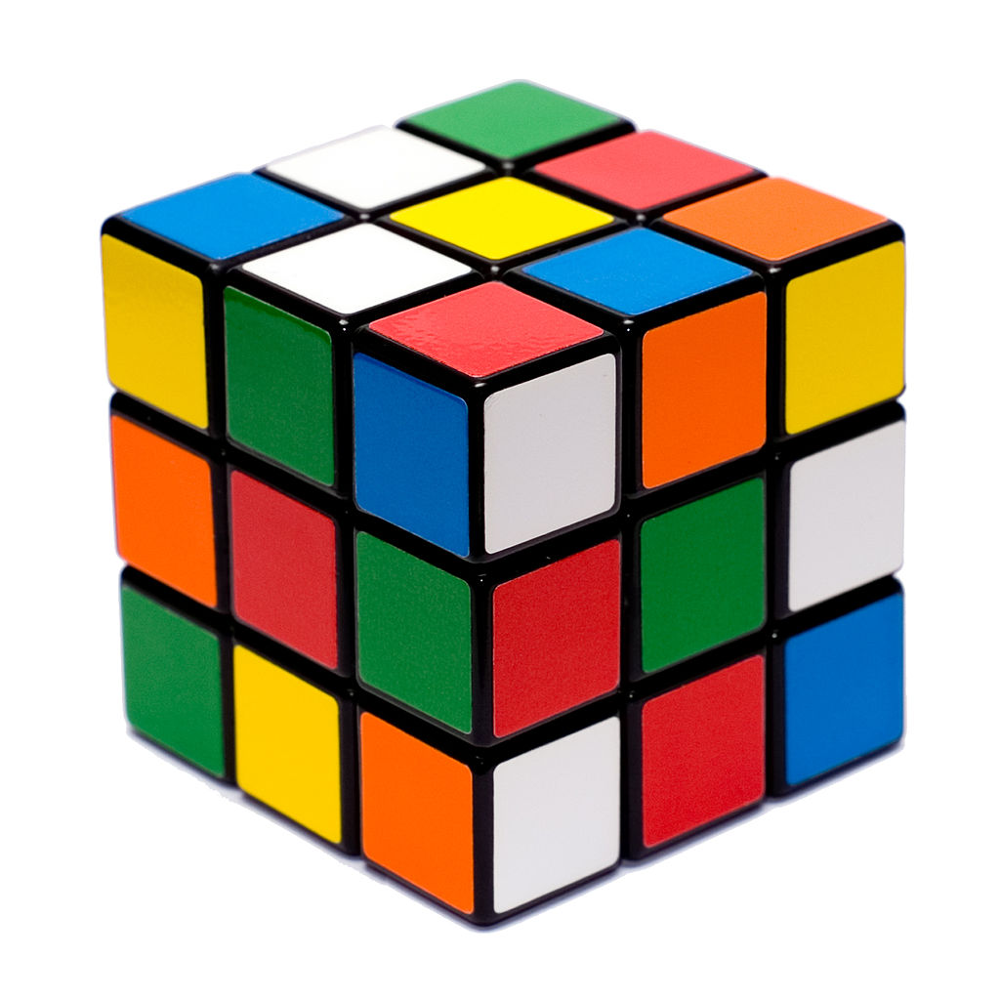

Bulmaca nedir?
Bulmaca; oyuncuların zeka, mantık, dikkat ve hafıza gibi zihinsel yeteneklerini kullanarak çözdükleri; yazılı, sözlü veya mekanik formatlardaki problemlerden oluşan genellikle tek kişilik oyun. Türkçede zeka oyunu kavramı da sıklıkla zeka ve mantığa dayalı bulmacaları tanımlamak için kullanılır.
 

Tarihçe
İnsanoğlu tarih boyunca bulmacalara ilgi duymuştur. 18. yüzyıl İngilteresinde çocuklara has icat edilen bazı bulmacalar, zeka geliştirdiğine inanılarak popüler hale gelmiş; bu dönemde pek çok bulmaca kitabı yayınlanmıştır.
ABD'de ilk defa yayımlanan ileri zorluk derecesindeki bulmaca Sun pazar eki gazetesindeydi. 1913 yılında bu yayımla birlikte toplumun beğenisini kazanan bulmacalar yaygınlaşarak çok farklı alanlarda da boy gösterdi ve Batı dünyasında yeni bir sektör oluştu.